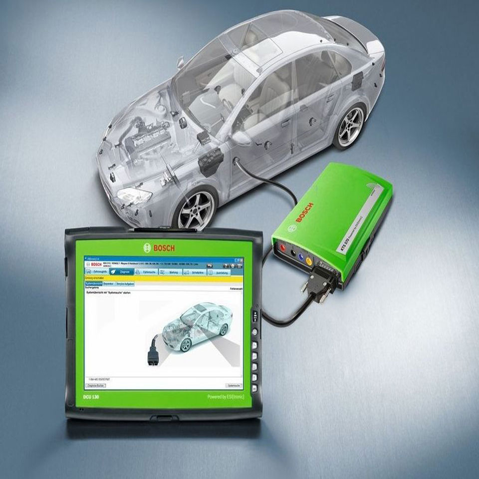
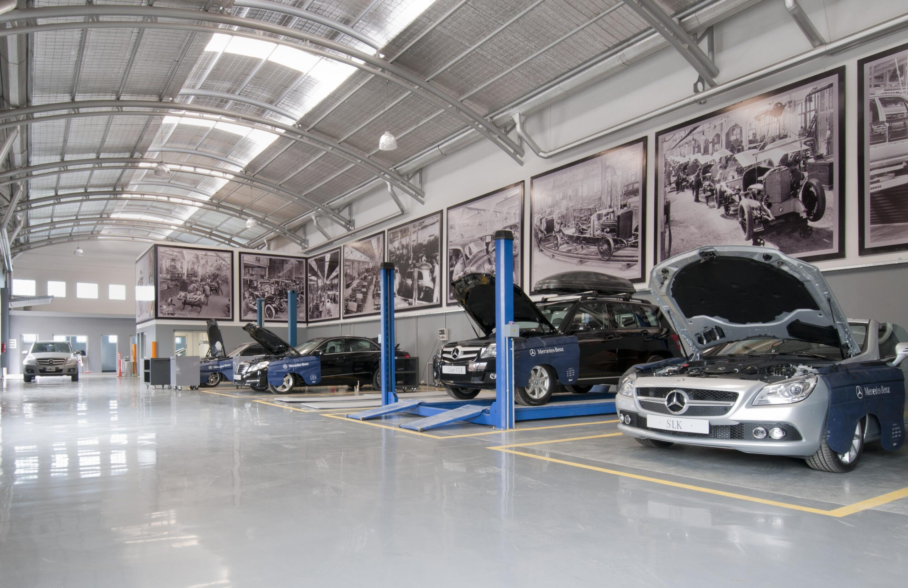
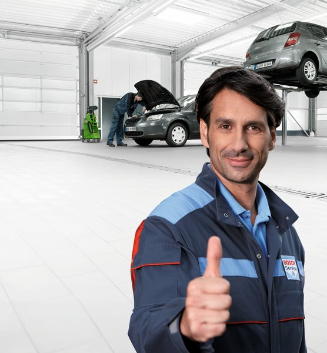
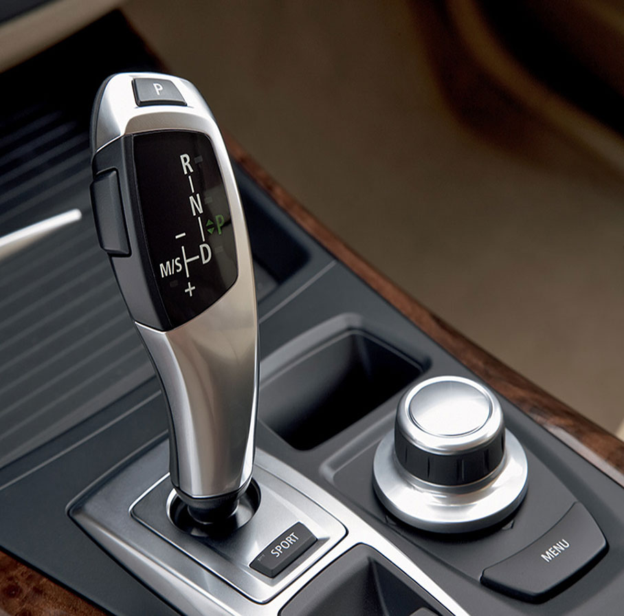
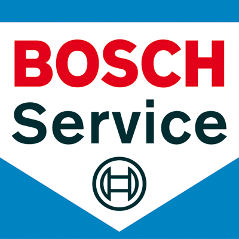

01 / DIAGNOSISUn buen diagnóstico.
Un buen diagnóstico.
El mejor comienzo.
Diagnosis electrónica para localizar el origen de la avería y decidir la intervención adecuada.
TALLER MULTIMARCA EN VALLADOLID
Tu coche forma parte de tu vida.
Déjalo en manos de quienes entienden
lo importante que es para ti.
Diagnosis, reparación y mantenimiento.
Con la confianza de Bosch Car Service.

Especialistas en marcas premium.
La misma atención para todas.
SERVICIOS
Una revisión a tiempo. Una avería que entender. Un cambio que vuelve a ir suave. Encontramos el cuidado adecuado para cada momento.

Diagnosis electrónica para localizar el origen de la avería y decidir la intervención adecuada.

Revisiones y mantenimiento para cuidar el motor y anticiparse a los problemas.

Mantenimiento especializado para cuidar el funcionamiento de tu cambio automático.
EL TALLER
Detrás de cada coche hay alguien que necesita llegar. Al trabajo, a casa, a ese viaje pendiente. Por eso, para nosotros, cuidar tu vehículo es cuidar de tu día a día.
En Argales VIP Motor combinamos la atención de un taller cercano con la tecnología de la red Bosch Car Service. Un equipo en Valladolid especializado en diagnosis, reparación y mantenimiento multimarca.
Ven a conocernos
NUESTRA FORMA DE TRABAJAR
Un buen taller se nota en cómo trabaja.
Y también en cómo te trata.
Equipamiento de diagnosis y conocimientos técnicos para entender lo que necesita tu coche.
Cuéntanos qué notas. Te ayudamos a entender el siguiente paso con un lenguaje cercano.
Desde una revisión hasta una reparación, prestamos atención a lo que hace diferente a tu vehículo.
VOLVER A LA CARRETERA EMPIEZA ASÍ
Contacta y dinos qué necesita tu coche.
Estudiamos el caso y te orientamos.
Coordinamos contigo la intervención.
PREGUNTAS FRECUENTES
Somos un taller multimarca, con especialización en BMW, Mercedes-Benz, Audi, SEAT, Volkswagen y Škoda, entre otras. Cuéntanos el modelo y lo que necesitas.
Sí. Realizamos mantenimiento y revisiones. Indícanos marca, modelo y kilometraje para que el equipo pueda orientarte antes de venir.
Puedes llamarnos al 983 22 81 45 o preparar una solicitud por WhatsApp desde esta página. El equipo te confirmará la disponibilidad; enviar la solicitud no reserva una cita automáticamente.
Estamos en la calle Metal, 19, en el Polígono Argales de Valladolid. El horario publicado es de lunes a viernes, de 07:00 a 15:00. Consúltanos los días festivos.
ESTAMOS CERCA
Lunes a viernes
07:00 — 15:00